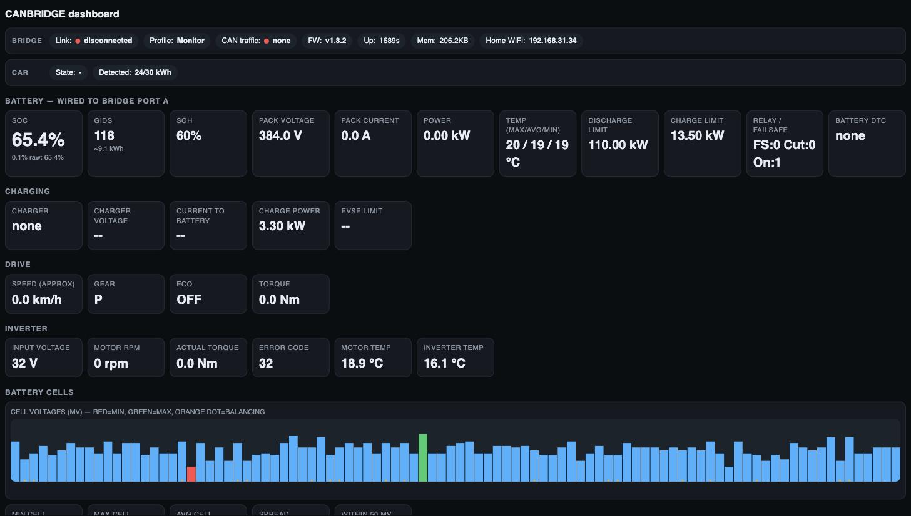
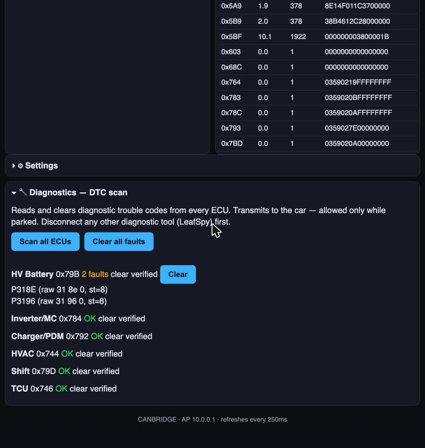

Nissan LEAF / e-NV200 battery-upgrade CAN bridge for the
LilyGo T-2CANFD (ESP32-S3). This page flashes the firmware over USB
from a Chrome or Edge browser.
What it does
Wired between the battery and the car, CANBRIDGE serves a live dashboard over
WiFi — its own always-on CANBRIDGE access point, plus your home
network if you set one. Everything runs on the board: no app, no cloud.
Live battery & vehicle telemetry — SOC, GIDs, SOH, pack
voltage / current / power, temperatures, relay & failsafe state, charging
(charger type, voltage, power, EVSE limit), drive (speed, gear, torque) and
inverter (RPM, torque, temperatures).
Diagnostic trouble codes — read & clear — scan every reachable
ECU, see faults decoded (e.g. P318E) under each one, and clear
them from the browser. Transmits only while the car is parked.
Battery cell monitoring — all 96 cell voltages, min / max / average
/ spread, per-cell balancing, pack temperatures, and a persistent imbalance
history that flags cells drifting over time.
More — home-WiFi station mode alongside the always-on AP, a raw CAN
frame monitor, a parked-gated custom CAN transmit, and switchable
Monitor / LEAF / e-NV200 profiles.

The dashboard — live battery, charging, drive and inverter
telemetry.

Diagnostics — scan and clear trouble codes on every reachable ECU
(example data: the battery showing two swap-related codes).
Plug the LilyGo T-2CANFD into your computer with a USB-C cable.
Power it from USB only while flashing (no 12 V on VIN).
Loading the latest firmware…
Step 2: Install
Click the button, pick your board's serial port, and choose
Install. Select "Erase device" on a first-time install.
Step 3: Read the WiFi password
The bridge creates its own WiFi network with a password unique to your
device. In the installer dialog, choose Logs & Console, then click
Reset device — within a few seconds the password appears in the line
[webui] AP 'CANBRIDGE' password: …
(If you already closed the dialog, click the install button again to reopen
it.)
Nothing else needs configuring. The bridge starts in
Monitor — a safe pass-through that changes nothing on the CAN bus — and
you pick the LEAF or e-NV200 profile later from its dashboard, once it is
installed in the car.
Troubleshooting
If the device is not detected when connecting, hold the BOOT button
while clicking Connect, and release it once erasing/installing starts.